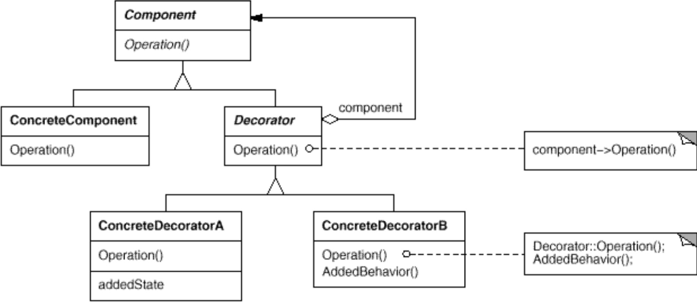
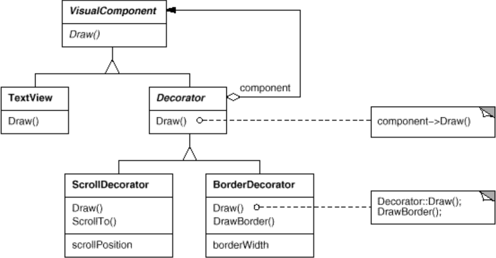
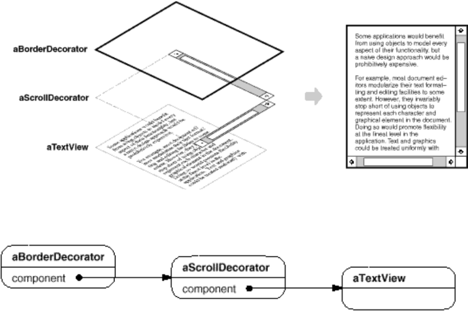

Il Decorator è un object design pattern strutturale.
Consideriamo un sistema per creare interfacce grafiche.
Consideriamo una classe TextView rappresentante una
finestra contenente del testo. TextView può essere
arricchita con delle barre di scorrimento se il testo contenuto supera
una certa lunghezza. Inoltre, può essere anche arricchita con dei bordi
per migliorare la leggibilità del testo.
Problema: arricchire entità con decorazioni diverse.
Non tutte le TextView necessitano di barre di
scorrimento e bordi: alcune possono necessitare solo di una delle due
cose, altre di nessuna. Inoltre, le decorazioni possono essere
molteplici e potenzialmente estendibili.
Una possibile soluzione può essere generare una sottoclasse per ogni decorazione da aggiungere.
Se implementata in questo modo, sarebbe anche necessario creare una sottoclasse per ogni combinazione possibile di decorazioni, il che creerebbe diversi problemi dal punto di vista dell’estensibilità e della manutenibilità.
Il decorator deve:



interface VisualComponent {
void draw();
}
class TextView implements VisualComponent {
public void draw() {
// Some code
}
}
abstract class Decorator implements VisualComponent {
private VisualComponent component;
public Decorator(VisualComponent c) {
component = c;
}
public void draw() {
component.draw();
}
}
class BorderDecorator extends Decorator {
public BorderDecorator(VisualComponent c) {
super(c);
}
public void draw() {
super.draw();
drawBorder();
}
private void drawBorder() {
// Some code
}
}
class Client {
public void setup() {
TextView t = new TextView();
VisualComponent v = new BorderDecorator(t);
VisualComponent s = new ScrollDecorator(v);
s.draw();
}
}